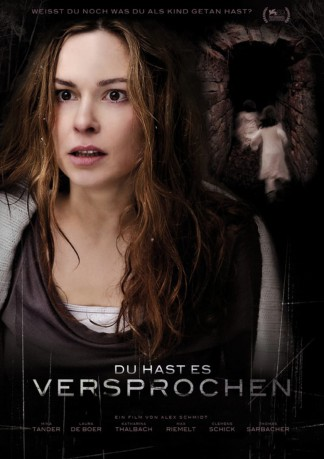
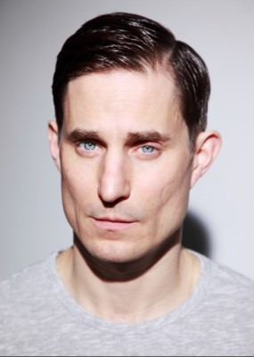
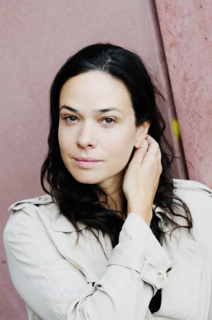

#8186 Du hast es versprochen
 
 IMDB-Wertung: 5.9 / 10
IMDB-Wertung: 5.9 / 10  Metascore: 0
Metascore: 0 
Hanna und Clarissa waren als Kinder beste Freundinnen. Zusammen mit ihren Eltern verbrachten sie ihre Ferien auf einer malerischen Insel. Kurz nach Hannas neuntem Geburtstag bricht der Kontakt unvermittelt ab und erst 25 Jahre später kommt es zu einem Wiedersehen. Hanna (34) ist mittlerweile verheiratet, hat eine siebenjährige Tochter und arbeitet als Oberärztin in einem Krankenhaus. Dort trifft sie auf ihre alte Freundin, die nach einer Tablettenüberdosis in die Notaufnahme eingeliefert wurde. Die beiden Frauen freunden sich rasch wieder an, verbringen wundervolle Stunden miteinander und beschließen wie früher ein paar Tage auf der Insel zu verbringen.
Jahr: 2012
Dauer: 98 Minuten
FSK: 16
Land: Deutschland Studio: Falcom MediaTonspuren:
Untertitel:
Auflösung: 1080p (1920x816) Größe: 6287 MB
Genre: Thriller, Drama, Mystery
Regisseur: Alex Schmidt
Drehbuch: Wilbur Smith
Soundtrack: Marian Lux
Darsteller:
 Mina Tander als Hanna
Mina Tander als Hanna Katharina Thalbach als Gabriela
Katharina Thalbach als Gabriela Max Riemelt als Marcus
Max Riemelt als Marcus-  Clemens Schick als Johannes
-  Jessica McIntyre als Hannas Mutter
- Laura de Boer als Clarissa / Maria
- Lina Köhlert als Lea
- Mia Kasalo als Maria jung / Tamara
- Greta Oceana Dethlefs als Hanna jung
- Alina Sophie Antoniadis als Clarissa jung
- William Boer als Marcus jung
- Thomas Sarbacher als Tim
- Anna Thalbach als Gabriela jung
- Valentin Mereutza als Tim jung
- Tim Kirschstein als Assistenzarzt
- Ellenie Salvo González als Echte Clarissa
- Dirk Köhlert als Hannas Vater
- Daniela Soko als Clarissas Mutter
- Rocco Wolf als Clarissas Vater
- Rolf Reinecke als Psychiater
- Luise Helm als Maria
Datei: X:\2012(A-F)\Du hast es versprochen (2012, FSK16, 1920x816).mkv seit 07.02.2018
Festplatte: HD 2012(A-M)
 Es gibt insgesamt 102 Filme in der Gruppe '2012(A-F)'
Es gibt insgesamt 102 Filme in der Gruppe '2012(A-F)'